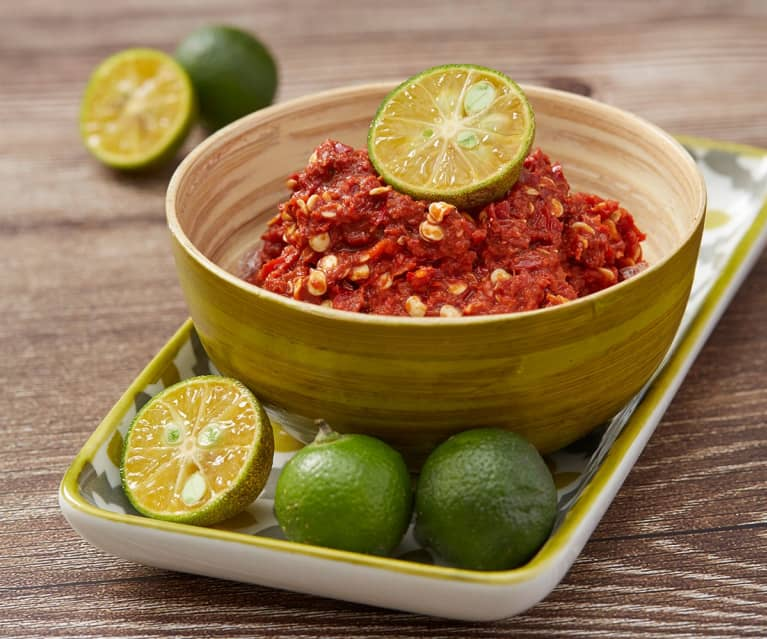

Recipe for Sambal
Go to homepage

Authentic Indonesian Sambal Recipe: A Spicy Chili Paste Perfect for Nasi Goreng, Lontong, and Sate
Sambal is a spicy chili paste that is commonly used as a condiment in Indonesian and Malaysian cuisine.
It can be made with a variety of different chili peppers and other ingredients, such as shallots, garlic, and shrimp paste,
to create a unique and flavorful blend. This recipe will yield about 1 cup of sambal.
Ingredients
- dried chili peppers, soaked in hot water for 30 minutes
- 3 shallots, chopped
- 3 cloves of garlic, chopped
- 2 tsp shrimp paste
- 2 tbsp vegetable oil
- 1 tsp sugar
- Salt to taste
Steps
- In a blender or food processor, blend together the soaked chili peppers, shallots, garlic, and shrimp paste until smooth.
- Heat the oil in a pan over medium heat. Add the chili paste and cook for 3-5 minutes, stirring constantly.
- Add the sugar and salt to taste, and continue to cook for an additional 2-3 minutes.
- Allow the sambal to cool completely before storing in an airtight container in the refrigerator.
Sambal can be used as a condiment for a variety of dishes, such as nasi goreng (Indonesian fried rice), lontong (compressed rice cake), and sate (skewered meat). You can also use it as a marinade or dipping sauce. Adjust the amount of chili peppers to your desired level of spiciness.